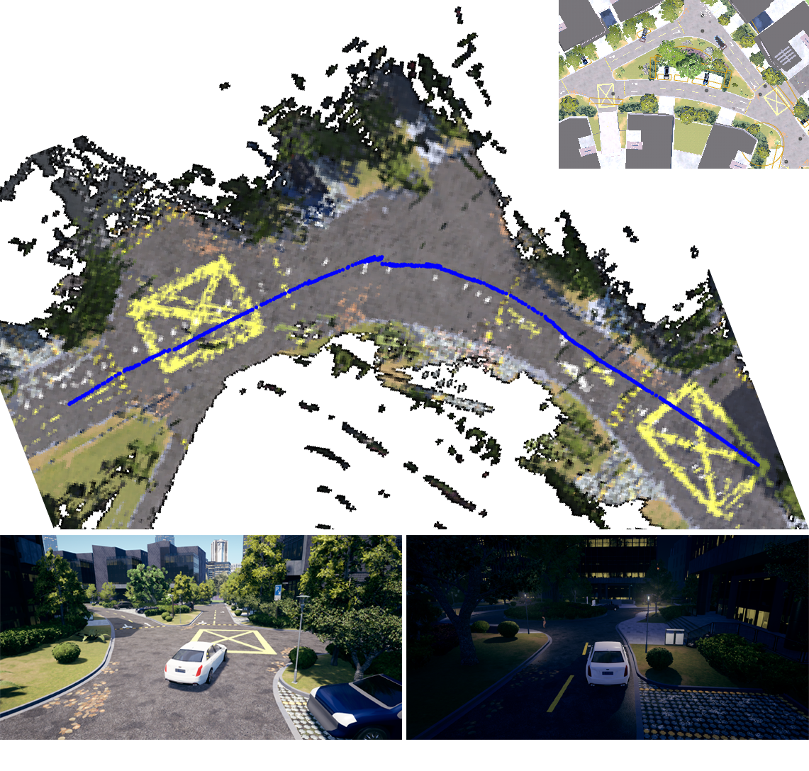
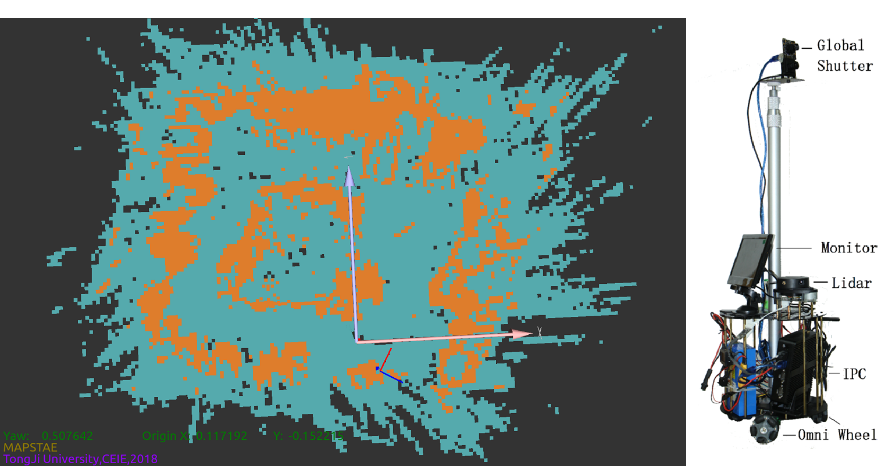
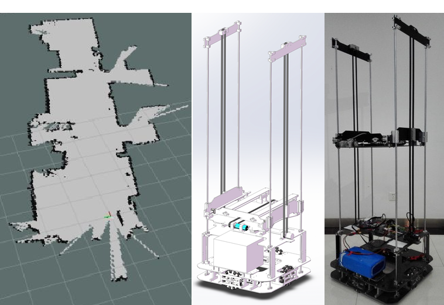
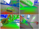
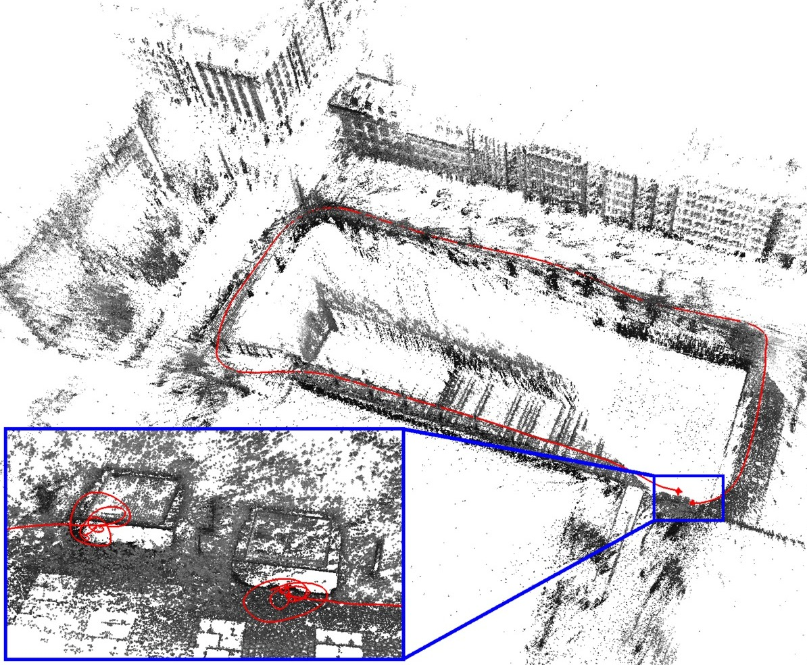
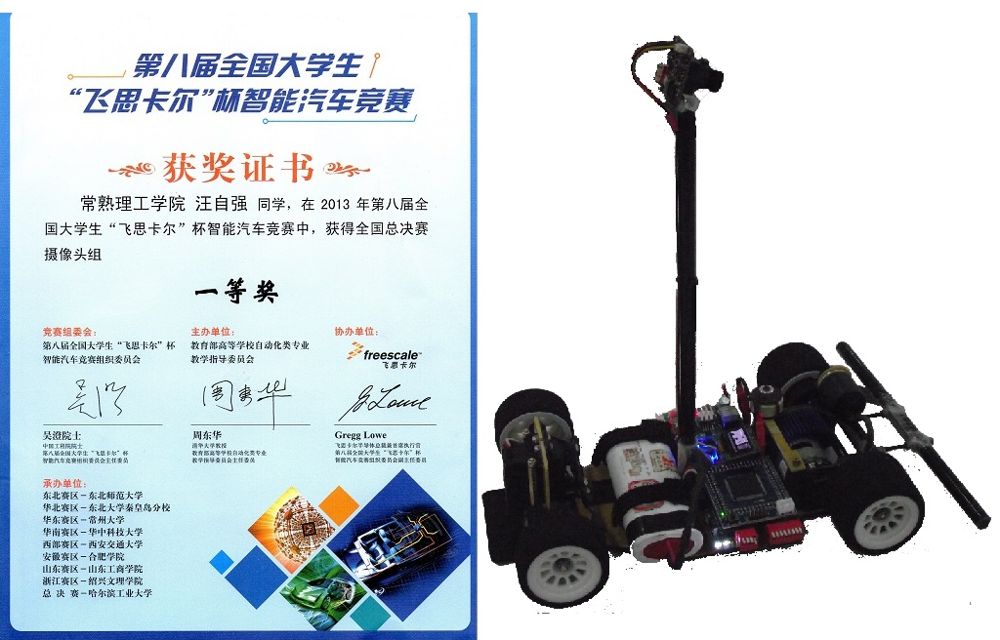
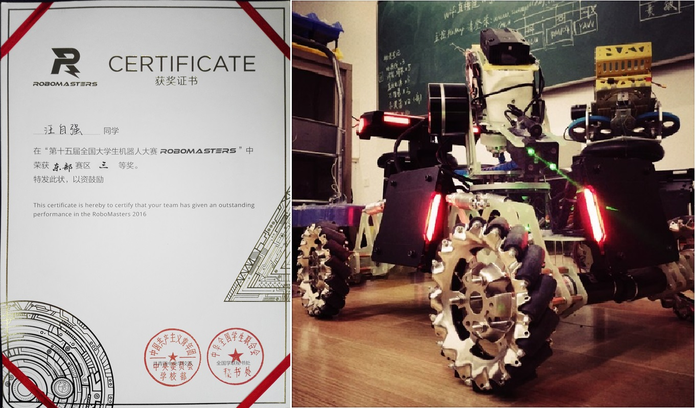

Welcome
机器人学爱好研究者， 研究生和工作期间主要专注在机器人多传感器融合状态估计，同步建图与定位(SLAM)等方面. 2018年于同济大学获得硕士学位，本科自动化，研究生控制科学与工程。旋即加入驭势科技从事机器人定位系统工作。
在此展示一些我撰写的论文、演示视频、开源程序和数据集等.
Links:
 GitHub
GitHub
Contact:
1531651@tongji.edu.cn
Project Highlights
1.Stereo-VI-DSO:双目直接稀疏视觉惯性里程计
Stereo-VI-DSO 是我主导开发的紧耦合视觉-惯性里程计(VIO)，以双目相机和IMU作为定位源，采用联合高斯牛顿优化滑窗内的所有参数
包括所有关键帧的位姿、IMU的速度和bias、图像亮度参数以及所选像素的深度值。系统的视觉部分是将单帧静态误差的约束加入到多帧动态多视光束平差(BA)中，
但与基于特征点的系统不同，它直接将光度误差最小化，故称为直接法。双目的固定基线可校正尺度漂移。系统的惯性部分利用预积分法在关键帧之间积累IMU信息，
并将其作为关键帧之间的附加约束插入到优化中。此外，我们还介绍了一个基于虚幻引擎4开发的仿真平台，它可以输出大部分用于自动驾驶领域的传感器的原始数据。
我们在真实数据和仿真数据的基础上对该方法进行了评价，定性和定量的实验结果表明，该算法在跟踪精度和鲁棒性方面均优于Stereo-DSO。
文章和演示视频可见Publications[1]。如图1所示：

图1: 上图是里程计的三维重建效果图，蓝色是里程计估计轨迹。右上角是实际道路路网。下图是来自仿真平台数据集的示例图像:运动强、光照低，对里程估计有很大的挑战。
2.基于LSD-SLAM的机器人路径规划和轨迹跟踪系统
该项目使用机器视觉实现了一个高效的机器人系统集成。
重点研究了机器人的视觉定位并制备环境地图；使用A*算法路径规划，进而完成机器人轨迹跟踪控制。
首先使用LSD-SLAM直接法视觉里程计解决定位问题，并计算环境中主要障碍物的三维位置。采用占有栅格地图进行地形描述，将三维空间点投影到机器人运动平面，据此计算各栅格的可通行程度。
依靠地形信息，使用了优化的A*算法进行路径规划。最后根据定位和规划控制机器人完成轨迹跟踪。还开发了轨迹跟踪机器人原型机，仿真和实验结果都验证了本文方法的有效性与可靠性。
文章和演示视频可见Publications[2][3]。如图2所示：

图2: 左图环境地形图，黄色代表不可通行区域，绿色是可通行的。右图是机器人原型机。
3.基于Gmapping和ROS的建图机器人
将二维激光雷达RPLIDAR安装在四全向轮叉车机器人上，使用ROS的Gmapping完成建图与定位功能。ROS的slam_gmapping节点将订阅LaserScan节点以获取激光扫描数据，
然后调用Rao-Blackwellized粒子滤波器的增量构建栅格地图，同时发布消息map节点以完成建图和输出机器人定位数据到tf节点。Gmapping是2007年德国弗莱堡大学的Giorgio教授发表开源的2D激光SLAM算法，
在SLAM领域早期具有较大开创意义且被广泛运用。四全向轮叉车机器人用于仓储环境的货物运输。
如图3所示：

图3: 左图二维的Lidar里程计地图，中图是叉车机器人图纸，右图实体。
Publications

1.Direct Sparse Visual-Inertial Odometry with Stereo Cameras (Ziqiang Wang, Chengcheng Guo), No open,under review by IROS, 2019.
 [补充材料]
[补充材料]
 [视频]
[视频]

2.Wheeled Robots Path Planing and Tracking System Based on Monocular Visual SLAM (Ziqiang Wang, Hegen Xu, Youwen Wan), 2018.
[pdf]
[视频]
[code]
 3.Research and Implementation of Robot Path Planning Based on VSLAM (Ziqiang Wang, Hegen Xu, Youwen Wan), In International Conference on Electrical Engineering, Control and Robotics (EECR), 2017.
3.Research and Implementation of Robot Path Planning Based on VSLAM (Ziqiang Wang, Hegen Xu, Youwen Wan), In International Conference on Electrical Engineering, Control and Robotics (EECR), 2017.
[pdf]
Rewards
1.“飞思卡尔杯”全国大学生智能汽车竞赛，国家级一等奖，摄像头组全国总决赛第四名, 2013.
[video]

2.“华为杯”中国研究生数学建模竞赛，国家级二等奖，选题为“地下物流系统的构建”, 2017.

3.“瑞萨杯”全国大学生电子设计竞赛，省级二等奖, 2013.
4. Robomaster机甲大师赛，省级三等奖, 2016.
[video]
